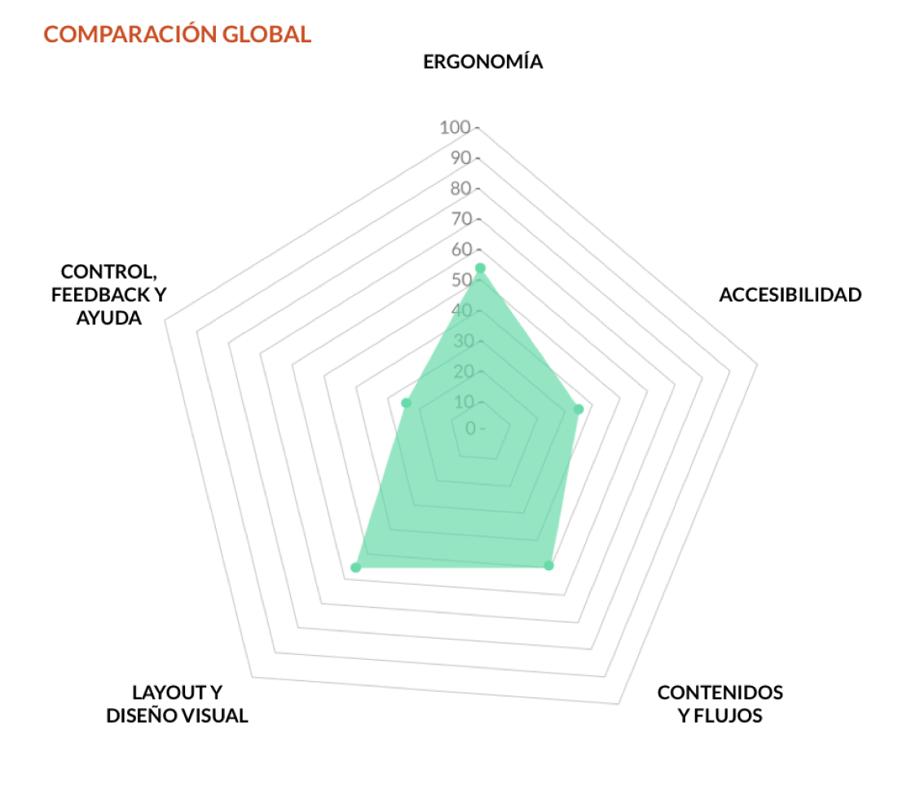
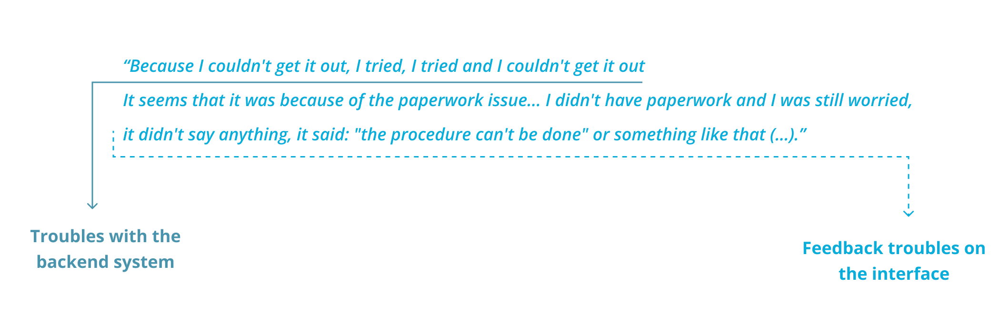
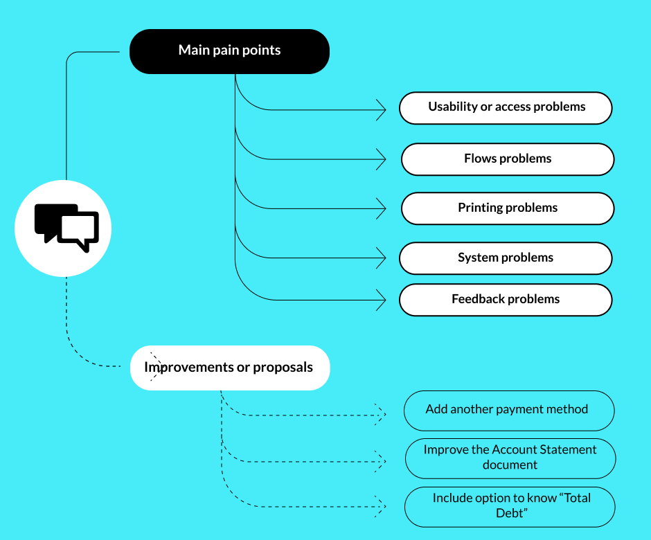
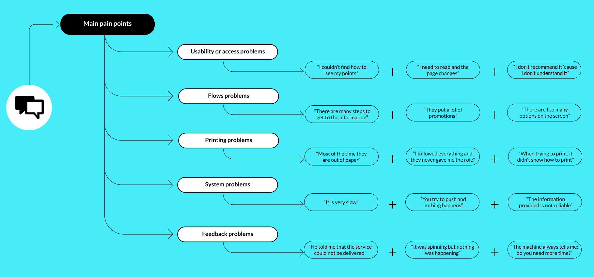
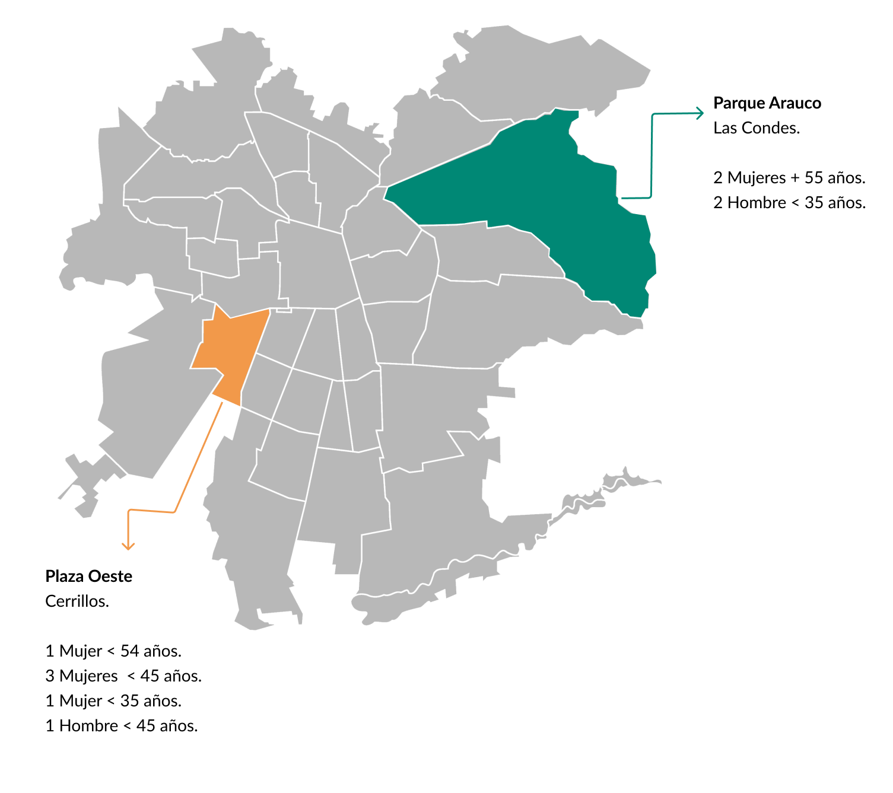
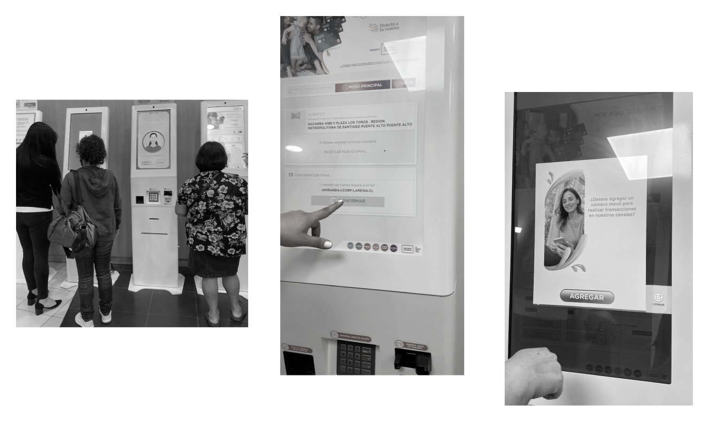
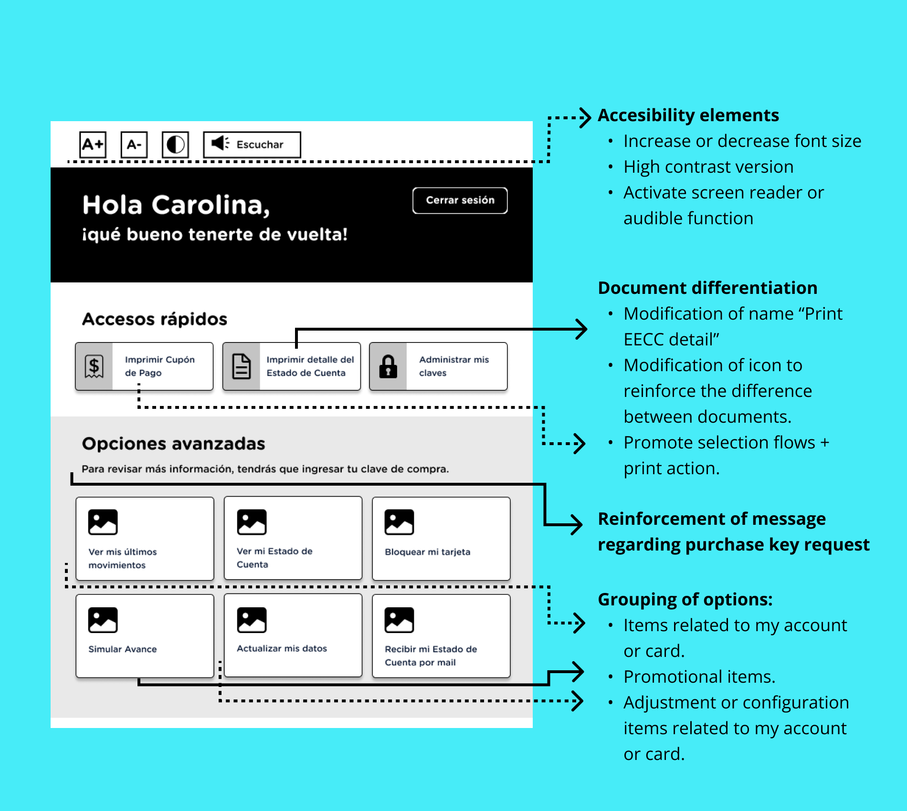
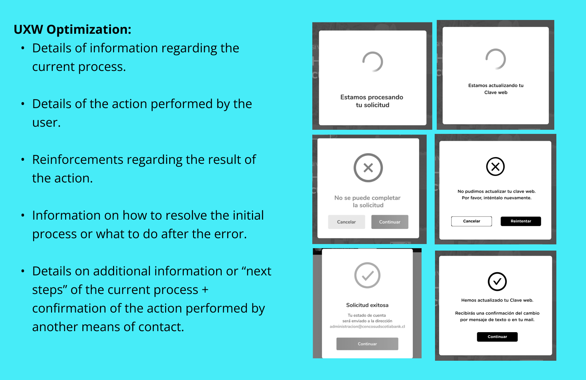

01 Brief and context
A Mastercard banking operator integrated into one of Chile's largest retail chains was redesigning their physical branches. Within that project, they asked us to investigate a specific problem: the self-service kiosks installed in branches were generating unusually low NPS — but nobody knew why.
The assignment was diagnosis, not redesign. They needed to understand what was broken and how to prioritize it — with enough rigor to justify development investment.
The scope covered the full kiosk interface: usability, interaction design, information architecture, accessibility, content labelling, and the match between what users expected to accomplish and what the kiosk actually let them do.
02 Research strategy: three lenses, one problem
Rather than starting with the interface, I designed a three-method research approach that would let us triangulate findings from different angles. Each method was chosen to answer a specific type of question:
The sequencing was deliberate: the expert analysis gave us a framework for interpreting the verbatims, and both together shaped the hypotheses we tested in the guerrilla sessions. By the time we ran the in-person tests, we already knew which flows were most likely to fail — we were validating, not exploring blind.
1
Expert usability analysis
Custom framework for 6 kiosk dimensions: ergonomics, accessibility, content and flows, visual layout, control, and feedback and help.
2
NPS verbatim analysis
222 detractor comments, coded into two categories: pain (what's broken) and improvement (what they think they need).
3
Guerrilla testing in context
Testing on real kiosks, in real branches, with real customers — kiosk usability depends on physical context, not the lab.
03 Expert usability analysis
I developed a custom evaluation framework covering six dimensions relevant to kiosk-specific interfaces: ergonomics, accessibility, content and flows, layout and visual design, control, and feedback and help.
Each dimension was scored on a three-point scale: fully meets the criteria, partially meets, or does not meet. Items that didn't apply to kiosk-format interfaces were excluded.
The results were striking. Overall compliance was 44.7% — below the 70% threshold we set as the minimum for a functional self-service interface. The two weakest dimensions:
Control, feedback and help — 25%
The critical gap
Users had no reliable way to understand the status of their actions, recover from errors, or find help when stuck.
Accessibility — 36.4%
Below minimum
Contrast ratios, touch target sizes and text legibility failed basic standards, with particular issues for users with visual or motor impairments.
"The highest-scoring dimensions — layout and visual design (57.7%) and ergonomics (54.2%) — still fell below the 70% functional threshold. The kiosk looked acceptable but didn't work."

04 Verbatim analysis: 222 voices
The client had accumulated NPS data across their branch network but had never systematically analyzed the open-text responses from detractor scores. I reviewed 222 comments from detractor users collected between July and October 2020, across branches in different regions.
I coded each comment into two categories: pain-focused (describing a bad experience without suggesting improvement) and improvement-focused (describing a bad experience with a suggested fix). This distinction was methodologically important — pain comments tell you what's broken, improvement comments tell you what users think they need, which are two different things.

From pain comments I identified 5 recurring problems with over 20 mentions each — a threshold to ensure we were tackling systemic issues, not isolated cases.


05 In-context guerrilla testing
Test design
Because a lab test was outside the project budget, I designed and executed a guerrilla test directly at in-branch kiosks — the actual devices, in real context, with real customers. This was the right call: kiosk usability is highly dependent on physical context, lighting, time pressure and the emotional state of someone who has just come in to sort out a financial issue.
We tested across two branches in Santiago's Metropolitan Region during peak hours — 11am to 2pm on two consecutive days — contacting 90+ customers and recruiting 10 willing participants. Each session lasted an average of 10 minutes, with the longest session (a first-time user) running 17 minutes and the shortest (a frequent user) at 5 minutes. This variance in itself was a finding: the interface penalised inexperienced users disproportionately.


Hypotheses tested
1
Users understand what information they'll get from the first profile view (ID only).
UNDETERMINED — Some users understood the distinction between view types; others skipped directly to the detailed view without testing the simpler one.
2
Users can identify the purpose of each screen within the first few seconds.
UNDETERMINED — Expert users had no difficulty. First-time users could not quickly differentiate what each screen was for.
3
Users expect the kiosk to be advisory only — not to resolve issues.
CONFIRMED — All participants confirmed their expectations were informational. For resolution, they preferred to speak with a person.
4
Users understand the difference between a payment coupon and an account statement.
REJECTED — Only expert users could distinguish them by label. All others differentiated them only after printing both — a costly and frustrating discovery path.
5
Feedback modules help users understand what is happening in the flow.
REJECTED — Users consistently ignored status and confirmation screens. The feedback language was too generic to communicate what had actually happened.
06 Key findings and diagnosis
The most important insight from combining all three research methods was this: the NPS problems were not isolated incidents caused by individual interface failures. They were different expressions of the same unified problem — a kiosk that left users uncertain at every critical moment.
Users didn't know what they'd get when they selected a service. They didn't understand what was happening when they completed an action. They couldn't distinguish between document types without printing them. And when something went wrong, there was no recovery path they could find independently.
Every pain point in the NPS comments traced back to one of three root causes:
1
Ambiguous labelling
Service names and document types didn't match user mental models.
2
Absent or generic feedback
Confirmation and status screens didn't tell users what had actually happened.
3
No recovery paths
Errors left users stranded, with no clear next action.


Wireframe before / after — kiosk home — image
Original screen vs proposed redesign with change annotations
44.7%
global compliance baseline
Target: 70%
5
pain clusters identified
>20 mentions each
222
comments analyzed
July–October 2020
3
systemic root causes
Labelling · Feedback · Recovery
07 Design recommendations
Information architecture and labelling
The service menu was reorganised to match the way users described their tasks, not the internal product taxonomy. Card sorting data from the verbatim analysis informed the new category structure. Services were renamed to match natural language — the terms users actually used in their open-text NPS responses.
Feedback system redesign
Every transaction confirmation and status screen was rewritten to answer three questions explicitly: what just happened, what it means for the user, and what they should do next (if anything). Loaders were replaced with progress indicators showing step position within the flow. Error states were redesigned to be specific rather than generic.
Flow simplification
The main service flows were reduced in steps by consolidating screens that required sequential decisions with no real separation of purpose. The document distinction problem — users unable to differentiate between a payment coupon and an account statement until after printing — was addressed by adding a preview with a plain-language description of each document before the user committed to printing.
Accessibility improvements
Contrast ratios across the interface were raised to WCAG AA compliance. Touch targets were enlarged to meet minimum sizing for users with motor impairments. High-value text elements — account numbers, balances, and document names — were increased in size and weight to be legible at the typical standing distance from a kiosk screen.
These recommendations were delivered to the client as a prioritised roadmap, with each improvement mapped to the specific NPS pain points it addressed — giving the product team a clear, evidence-backed case for development investment.
08 Key learnings
Mixed-methods triangulation produces better diagnoses than any single method
If I had only run the expert analysis, I would have found the interface problems but missed the emotional context behind them. If I had only done the guerrilla test, I might have fixed the symptoms visible in the session without addressing the systemic root cause. The combination — each method informing the next — was what made the diagnosis credible and actionable.
User language is the most direct route to IA problems
Reading 222 verbatim comments was one of the most efficient research investments in this project. The open-text responses contained the exact words users expected to see in the interface — and the gap between those words and the actual labels in the kiosk was the primary cause of the navigation failures we observed in testing.
A problem that affects one user likely affects many
The client suspected 'something was wrong' but assumed the low NPS was caused by edge-case technical failures. The research showed the opposite: every pain point in the verbatims was a systemic design failure that affected a significant proportion of users. The kiosk wasn't broken for some people — it was broken for most people, in predictable and fixable ways.